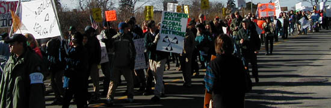

NOVEMBER 17TH KENNEBUNKPORT
ANTI-CORPORATE WAR RALLY\TEACH-IN ARCHIVE
|
 Nearly 350 citizens from all across the state marched to the Bush compound in Kennebunkport to protest the indiscriminate bombing of Afghanistan, the accelerating attacks on our civil liberties, and the ongoing assaults and opportunism of our de facto corporate rulers.
|